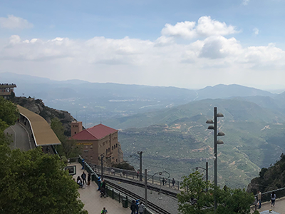
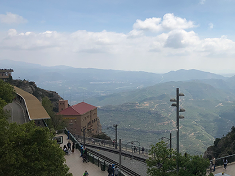

La catedral de Barcelona (situada en el barri gòtic), és la catedral gótica de Barcelona es va començar a construir l’1 de maig de 1298,també coneguda com a catedral Seo o Seu. És una de les més representatives de l'arquitectura catalana. Com molts edificis religiosos van haver de fer-se lentament.
En el segle XIX es va construir la façana principal, la catedral mesura que 90 metres de llarg per 40 d’ample, el jardí del claustre és de 25 metres, i el claustre va ser construït durant els segles XIV i XV. La catedral està dedicada a la Santa Creu. També està el temple de la Santa Creu,que és una de les més antigues.
Els seus murs amaguen històries de l’antiga Barcelona, i la seva façana és una de les més fotografiades. El claustre, amb les oques blanques de santa Eulàlia, les cinc portes d’accés, l’ou com balla o les 200 gàrgoles que la vigilen des de la teulada són alguns dels descobriments que cal fer en aquesta cuitât.


Molt prop de la catedral està situada la paret del petó, és un mural el qual està format per 80 columnes i 50 files, amb aproximadament 4.000 fotos. El mural es titula “El món neix en cada petó”, està fet en commemoració del Tricentenari de 1714.
 

La mare de déu també coneguda com la Moreneta, és la patrona de Catalunya i una de les set patrones de les comunitats autònomes d’Espanya. És un lloc molt visitat, gràcies a la quantitat de coses que et pots trobar, pots anar d’excursió i poder veure i conèixer més sobre aquest lloc i passar un bon moment en família o amb amics.
L’origen històric del santuari de la mare de Déu de Montserrat es troba l’ermita de Santa Maria. Durant els segles XVII-XVIII, el monestir de Montserrat es converteix en un centre cultural de primer ordre. De l’escola de música de Montserrat sorgeixen compositors importants. En 1844 s’inicia la restauració d’aquest mateix

L'origen històric del santuari de la Mare de Déu de Montserrat es troba a l'ermita de Sant Maria.
L'any 1025, funden un nou monestir al costat de l'ermita. El 1409, el monestir de Montserrat es converteix en abadia independent. Entre els anys 1493 i 1835, època de reformes de creixement i esplendor.
Durant els segles XVII-XVIII, el monestir de Montserrat es converteix en un centre cultural de primer ordre.
De l'escola de música de Montserrat sorgeixen compositors importants. Però el 1844 s'inicia la restauració.
La Guerra Civil espanyola (1936-1939) significa un nou abandonament del monestir. El Govern de Catalunya, però, preserva Montserrat del saqueig i la destrucció.


Permet superar un pendent màxim del 65,5% en set minuts, fins a 1.000 m sobre el nivell del mar. Ja al cim, al pla de les taràntules, podeu gaudir d'unes vistes incomparables del monestir, les comarques de la ròdia i Pirineus.
Uneix el monestir amb l'indret on, segons la llegenda, va ser trobada l'imatge de la Mare de Déu de Montserrat. El funicular deixa a la plaça on comença el Rosari monumental, el conjunt escultóric a l'aire lliure més important del modernisme català.
El Palau nacional, situat en Montjuïc és un palau construït entre el 1926-1929. Té una superfície de 32.000 m2. D'estil clàssic inspirat en el Renaixement espanyol, té una planta rectangular amb dos cossos laterals i un de posterior quadrat.
El Palau nacional es dedicà a mostrar una exposició d'art Espanyol amb més de 5.000 obres procedents de tot el territori de l'Estat. Entre el 1996 i 2004 el palau va patir una ampliació de càrrec amb l'objectiu de crear espais per poder encabir totes les obres de la col·lecció.
Al cim del Turó de la Roviera durant la Guerra Civil espanyola va instal·lar una bateria antiaèria. L'objectiu era protegir la ciutat de Barcelona de l'aviació feixista italiana que va utilitzar una tàctica sanguinària anomenada ''bombardeig en estora''. El bombardeig en esvora va provocar al voltant de 800 morts, més d'un miler de ferits i la destrucció total d'uns 50 edificis. La ciutat comptava com única defensa una àmplia xarxa de refugis subterranis i aquest sistema de bateries antiaèries.
Inicialment els Bunkers estava dissenyada per allotjar dos canons, però finalment es va disposar l'any 1938 de 4 canons Vickers de 105 mm.
Entre el 25 i 26 de gener del 1939, en el moment de la retirada, l'exèrcit republicà va inutilitzar les peces d'artilleria, però no les va retirar. Acabada la Guerra Civil tot l'espai va quedar en desús deixant les restes de les construccions de la bateria abandonades.


Aquest monestir ens mostra l'art i la cultura budista. Està situat al Parc Natural del Garraf, a la urbanització de la Plana Novella, en ple àmbit natural, on pots passejar per les muntanyes amb vistes increïbles, i rutes molt variades per accedir.
El monestir en si també té diverses rutes, on abans hi avia una granja d'animals ara hi ha vinyes de raïms on la gent pot anar a collir gratuïtament. Es pot accedir al monestir amb cotxe, caminant, en bicicleta (etc...). També es pot accedir en transport públic, fins al centre de Garraf, no hi puguin autobusos, ni trens.
Preu: Gratuït.